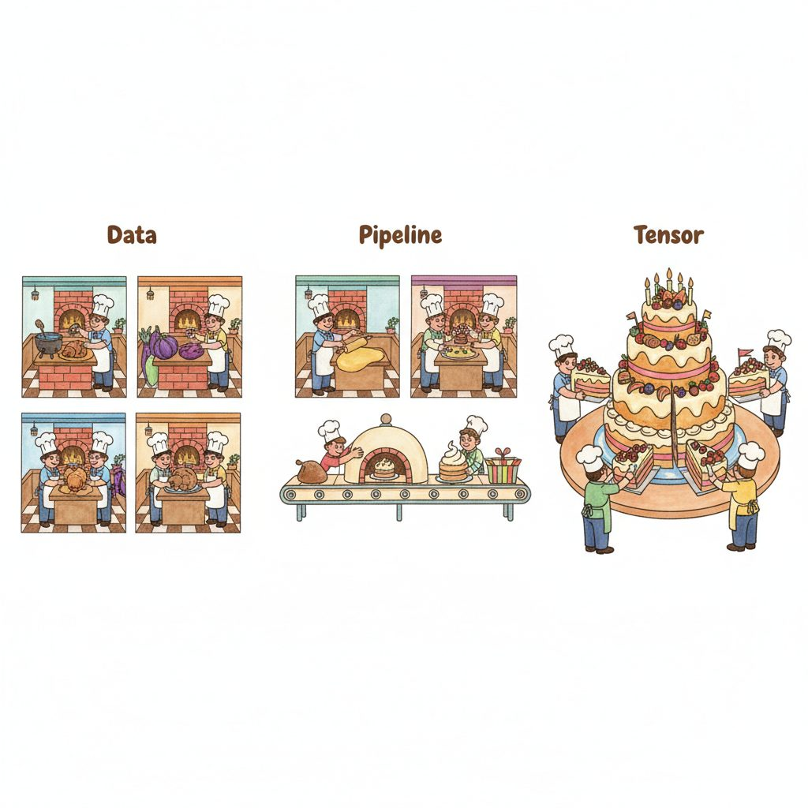
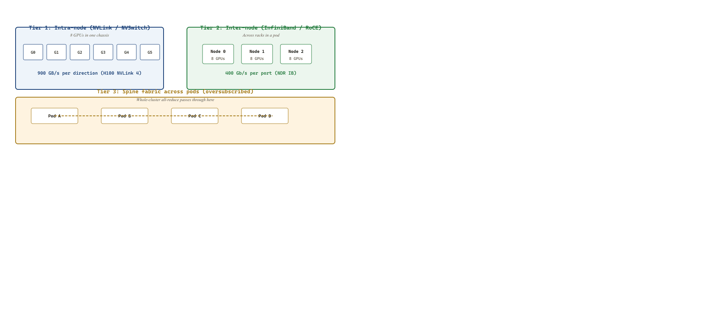

"My weights weigh a terabyte, my optimizer state weighs four more, and the single H100 you bought me holds eighty gigabytes. Please pass the NVLink."
Tensor, Memory-Constrained Sharding AI Agent
A trillion-parameter LLM cannot be trained on one accelerator: the parameters alone consume terabytes of memory, and any single GPU would need centuries of wall-clock time. Distributed training is the discipline of splitting a single mathematically identical training run across thousands of devices while preserving correctness, throughput, and reproducibility. Three orthogonal axes of parallelism (data, model, tensor) compose with a synchronization model (bulk synchronous parallel) and a communication substrate (NCCL on NVLink and InfiniBand) to make this possible. The rest of this chapter unpacks the algorithms that ride on top of these fundamentals.
Prerequisites
This section assumes familiarity with frontier accelerators from Section 58.1 and with LLM pretraining fundamentals from Section 6.1. Familiarity with transformer architecture from Section 2.1 helps when reading the memory-accounting walkthrough.
59.1.1 Why One GPU Is Not Enough
The 18-bytes-per-parameter overhead from AdamW state was so painful that DeepSpeed's ZeRO paper (Rajbhandari et al., 2020) listed the bytes as a literal accounting table in section 3. That table has been screenshotted, photoshopped, and turned into infrastructure-team Slack emoji at every frontier lab; one Anthropic engineer's laptop sticker just reads "18" in 72-point font.
The memory accounting for training a large transformer is brutal. For each parameter $\theta$ stored in bfloat16 (2 bytes), the AdamW optimizer keeps an fp32 master copy (4 bytes), an fp32 first moment $m$ (4 bytes), an fp32 second moment $v$ (4 bytes), and an fp32 gradient buffer (4 bytes). That is $18$ bytes per parameter just for state. For a 70-billion-parameter model:
Add activation memory ($\mathcal{O}(BL \cdot d_{\text{model}} \cdot n_{\text{layers}})$ for batch $B$, sequence length $L$) and the working set easily exceeds 2 TB. An H100 holds 80 GB. Even Blackwell B200 with 192 GB is not close. Frontier training therefore must shard state across many devices; the only open question is which axis to shard along.
Doubling FLOPs is a node upgrade. Doubling per-GPU memory means a new silicon generation. This single fact drives almost every distributed-training algorithm in this chapter: the cost we are trying to amortize is not the matmul, it is the GB of state that the matmul touches. Reducing memory pressure (ZeRO, FSDP) and reducing redundant memory copies (tensor parallelism) are valuable even when they cost more raw compute, because they let you run at all.
59.1.2 Three Axes of Parallelism

Every parallelism scheme partitions one of three dimensions of the training computation: the data batch, the layer stack, or the tensor itself. These three axes are orthogonal: production training runs compose all three (often called 3D parallelism, covered in Section 59.4).
59.1.2.1 Data Parallelism
Each of $N$ devices holds a complete model replica and processes a different slice of the global mini-batch. After backward, gradients are all-reduced across devices, then each replica performs an identical optimizer step. This is the workhorse: when it fits in memory, nothing else matches its simplicity. Gradient $g$ on device $i$ updates as:
Because the optimizer state is replicated, data parallelism scales throughput but not model size. A 70B model that fits on $k$ GPUs via tensor-parallel still fits on $k$ GPUs after going data-parallel; data parallelism gives you more samples per second, not more parameters.
59.1.2.2 Model Parallelism (Pipeline)
Partition the layer stack: GPU 0 holds layers $1 \ldots k$, GPU 1 holds layers $k+1 \ldots 2k$, and so on. Activations flow point-to-point between consecutive stages. The challenge is keeping all stages busy simultaneously, which requires micro-batching the work so that stage $i$ processes micro-batch $t$ while stage $i+1$ processes micro-batch $t-1$. Section 59.4 develops this in detail.
59.1.2.3 Tensor Parallelism
Inside a single layer, the weight matrix itself is sharded across devices. For an FFN up-projection $Y = X W$ with $W \in \mathbb{R}^{d \times 4d}$, split $W$ along its columns into $W = [W_1 \mid W_2 \mid \ldots \mid W_T]$ where $T$ is the tensor-parallel degree. Each device computes $Y_t = X W_t$ locally and a collective op stitches the partial outputs into the full result. Communication happens per layer, so tensor parallelism requires extremely fast interconnects (typically NVLink within a single node, never across InfiniBand). Section 59.3 covers Megatron-LM's careful design of which ops are column- versus row-parallel.
59.1.3 Collective Communication Primitives
The currency of distributed training is the collective: an operation that runs in lockstep across a group of devices. NCCL (NVIDIA Collective Communications Library) implements these on NVIDIA hardware; for AMD it is RCCL, and oneCCL on Intel. The four primitives that matter for training:
| Primitive | Input on each rank | Output on each rank | Bytes moved per rank | Where it appears |
|---|---|---|---|---|
| All-Reduce | tensor of size $S$ | sum of all inputs (same size $S$) | $\approx 2(N-1)S/N$ | DDP gradient sync |
| All-Gather | shard of size $S/N$ | concatenated full tensor (size $S$) | $\approx (N-1)S/N$ | FSDP forward (gather params) |
| Reduce-Scatter | tensor of size $S$ | shard of size $S/N$ summed across ranks | $\approx (N-1)S/N$ | FSDP backward (scatter grads) |
| Broadcast | tensor on root rank | same tensor on every rank | $\approx S$ | checkpoint load, init |
A useful identity: all-reduce = reduce-scatter + all-gather. This decomposition is what FSDP exploits: instead of one all-reduce that materializes the full gradient on every rank, FSDP does a reduce-scatter so each rank ends up with only its shard of the gradient. The same total bytes move on the wire, but the per-rank peak memory is $N\times$ smaller. We will see this trick again and again.
59.1.3.1 The Ring All-Reduce
The classic NCCL implementation arranges the $N$ devices in a logical ring and performs $2(N-1)$ steps. In the first $N-1$ steps (the reduce-scatter phase), each device sends a $S/N$-byte chunk to the next neighbor and receives a chunk from the previous one, accumulating partial sums. In the next $N-1$ steps (the all-gather phase), the reduced chunks circulate around the ring so every device ends up with the full sum.
The total bandwidth per device is:
Critically, this is independent of $N$ in the asymptotic limit: doubling the cluster size does not double the wire time for an all-reduce. That is why data-parallel training scales gracefully to thousands of GPUs; the per-step communication is bounded.
59.1.3.2 Tree-Based All-Reduce
For very small messages (typical at startup or in inference), the ring's $\mathcal{O}(N)$ latency dominates. NCCL switches to a tree topology at small message sizes: the data is reduced up a binary tree in $\mathcal{O}(\log N)$ steps and broadcast back down. The crossover point depends on the latency-to-bandwidth ratio of the link, which NCCL auto-tunes per fabric.
A 70B model with FSDP sharding produces a per-rank gradient shard of roughly $70 \times 10^9 \cdot 2 / 256 = 547$ MB per step. On a fabric with 25 GB/s effective per-link bandwidth (a reasonable NVLink + InfiniBand mix), the ring all-reduce wire time is $2 \cdot 547 / 25 = 43.8$ ms regardless of whether you have 256 or 2048 GPUs in the group, because the per-rank work scales as $(N-1)/N$ which is essentially 1. The wall-clock cost of synchronization is bounded; what scales linearly with $N$ is the FLOPs you get out of the same step.
59.1.4 The Interconnect Hierarchy
Not all communication paths are equal. A modern training cluster has at least three tiers, and the parallelism plan must respect this hierarchy.

59.1.4.1 NVLink and NVSwitch
Within a single node (DGX, HGX, or similar), NVIDIA's NVLink interconnect provides ~900 GB/s per direction between GPUs on H100 (NVLink 4) and 1.8 TB/s on B200 (NVLink 5). An NVSwitch crossbar gives all-to-all connectivity at full bandwidth within an 8-GPU server. This is fast enough that the per-layer all-reduces of tensor parallelism are tolerable.
59.1.4.2 InfiniBand and RoCE
Across nodes, you use a separate fabric: either Mellanox / NVIDIA InfiniBand (NDR 400 Gb/s per port in 2026, XDR 800 Gb/s on the horizon) or RDMA-over-Converged-Ethernet (RoCE v2). Both support remote direct memory access (RDMA), which lets one GPU's network card read or write another GPU's HBM directly without CPU involvement. NCCL transparently uses RDMA when available.
Bandwidth between any two GPUs in different nodes is roughly $400 \text{ Gb/s} = 50 \text{ GB/s}$ per direction, or about $20\times$ slower than NVLink. This factor is the single largest determinant of how to lay out your parallelism plan: tensor-parallel groups must fit inside a node; pipeline and data-parallel groups can cross nodes.
59.1.4.3 Spine and Rail Topologies
Above 256 GPUs, you cross a second tier of switches called the spine. Many production fabrics oversubscribe the spine (2:1 or 4:1) because intra-pod traffic is far more common than inter-pod, so cross-cluster bandwidth is meaningfully lower per pair. Designs like the "rail-optimized" topology (favored by Meta, Microsoft) dedicate one rail per GPU index so that all_reduce on GPU-3-of-each-node never contends with GPU-4's traffic.
Two often-overlooked sources of slowdown: (1) tail latency: NCCL's all-reduce is bottlenecked by the slowest device, so one straggler GPU drops your effective throughput to that rank's speed. A single overheated GPU can degrade a 1000-GPU cluster's MFU by 5-10%. (2) buffer fragmentation: if NCCL cannot allocate a contiguous communication buffer (often after long-running jobs build up CUDA caching allocator fragments), it falls back to bounce-buffered transfers that are 2-3x slower. Both problems show up in NCCL flame graphs (covered in Section 59.5) and are fixed by per-rank straggler detection and by periodic torch.cuda.empty_cache() calls at known synchronization points.
59.1.5 The BSP Model and Sync vs Async
The mathematical contract of standard distributed training is the bulk synchronous parallel (BSP) model, due to Leslie Valiant in 1990. A BSP step consists of:
- Local computation: each device runs forward + backward, producing local gradients.
- Communication: all devices participate in a collective (all-reduce, or reduce-scatter + all-gather).
- Synchronization barrier: no device proceeds until the collective is complete.
- Optimizer step: each device applies the now-identical gradient.
BSP guarantees that all replicas remain bitwise identical after each step, which makes distributed training mathematically equivalent to a single-device run with a larger batch size. The price is the barrier: if device $i$ is slow this step, every other device idles.
59.1.5.1 The Asynchronous Alternative
For decades, distributed ML used the asynchronous parameter server model: workers push gradients to a central server whenever they finish, and pull the latest parameters whenever they start a new step. Workers see slightly stale parameters; the optimizer must tolerate the staleness. Hogwild! (Niu et al., 2011) showed this can work for sparse SGD, and DistBelief / TensorFlow's PS architecture (Dean et al., 2012) scaled it to thousands of CPUs at Google.
Async lost to BSP for dense neural network training, for three reasons that still hold in 2026:
- Staleness hurts large-batch optimizers. AdamW and LION are extraordinarily sensitive to gradient direction; even a few-step delay shifts the moment estimates enough to slow convergence by 10-30%.
- Reproducibility. Async training is non-deterministic at the bit level. Debugging a divergence at step 25,000 is hard enough; debugging a non-reproducible one is hopeless.
- Hardware uniformity. Modern clusters are homogeneous: stragglers are rare, and when they happen you want to find and fix them, not paper over them with async.
Async survives at the edges: federated learning (Chapter 60 covers this), continual / online learning, and recently in decentralized training over the public internet (DiLoCo, OpenDiLoCo). But for frontier pretraining, BSP rules.
The BSP barrier turns a thousand independent stochastic gradient estimates into a single bit-for-bit deterministic step. This is what lets you re-run training from any checkpoint and recover the same trajectory; it is what makes ablation studies meaningful; it is what makes a regression in step 12,000 something you can hunt for in git. The "async is faster" intuition trades reproducibility for a 5-15% throughput gain that mixed-precision and gradient accumulation can give back without any of the debugging cost.
59.1.6 A Minimal DDP Training Loop
To make all of this concrete, the canonical PyTorch DistributedDataParallel (DDP) loop fits in fewer than 40 lines. Every more advanced scheme in this chapter starts from this skeleton.
# minimal_ddp.py: torchrun --nproc_per_node=8 minimal_ddp.py
import os
import torch
import torch.distributed as dist
import torch.nn as nn
from torch.nn.parallel import DistributedDataParallel as DDP
from torch.utils.data import DataLoader, DistributedSampler
def setup():
# torchrun sets RANK, LOCAL_RANK, WORLD_SIZE automatically
dist.init_process_group(backend="nccl")
local_rank = int(os.environ["LOCAL_RANK"])
torch.cuda.set_device(local_rank)
return local_rank
def cleanup():
dist.destroy_process_group()
def train(local_rank, model, dataset, epochs=1, lr=3e-4):
# 1) Build a sampler that gives each rank a disjoint slice of the data
sampler = DistributedSampler(dataset, shuffle=True)
loader = DataLoader(dataset, batch_size=8, sampler=sampler)
# 2) Move the model to this rank's GPU and wrap with DDP
model = model.to(local_rank)
model = DDP(model, device_ids=[local_rank])
optimizer = torch.optim.AdamW(model.parameters(), lr=lr)
for epoch in range(epochs):
sampler.set_epoch(epoch) # so shuffling differs across epochs
for batch in loader:
x, y = batch["input"].to(local_rank), batch["label"].to(local_rank)
optimizer.zero_grad(set_to_none=True)
loss = nn.functional.cross_entropy(model(x), y)
loss.backward() # DDP hooks fire here, all-reducing grads
optimizer.step() # bitwise-identical update on every rank
if __name__ == "__main__":
local_rank = setup()
model = nn.Linear(1024, 10) # stand-in for the real model
dataset = MyDataset() # any torch.utils.data.Dataset
train(local_rank, model, dataset)
cleanup()
torchrun --nproc_per_node=8 minimal_ddp.py. DDP installs hooks on each parameter that fire during .backward(), packing gradients into buckets and issuing one all-reduce per bucket; the overlap with the rest of the backward pass means communication and compute mostly hide one another.Three things to notice:
DistributedSampleris essential. Without it, every rank trains on the same data and the all-reduced gradient is identical to a single-rank gradient on a smaller batch; you have spent N GPUs to achieve 1 GPU's effective step.- DDP's gradient bucketing overlaps communication with compute. The first parameters whose backward finishes have their gradients all-reduced while later layers are still computing. This is why DDP can sustain > 90% scaling efficiency even on modest interconnects.
- The optimizer step is local but produces an identical result on every rank, because every rank applies the same averaged gradient to the same starting parameters. This invariant is the BSP contract; the rest of this chapter is about preserving it under sharding.
59.1.7 Gradient Accumulation and the Effective Batch
Frontier training runs care about a quantity called the effective batch size: the number of independent samples that contribute to a single optimizer step. Effective batch determines the noise scale of the gradient estimate and, indirectly, the optimal learning rate (McCandlish et al., 2018, formalized this as the gradient noise scale). For a 100B+ model, the empirical sweet spot is roughly $4$M to $16$M tokens per step.
You cannot necessarily fit that many tokens through the model at once. Two levers expand the effective batch without changing the parallelism plan:
- Data parallelism. Each of $N$ replicas processes its own slice of the global batch; gradients are averaged before the step. Effective batch scales linearly with $N$.
- Gradient accumulation. Within a single replica, $K$ micro-steps run forward + backward without calling
optimizer.step(); their gradients accumulate in place. The all-reduce happens once at the end of the $K$ micro-steps. Effective batch scales by $K$ at zero communication cost.
The "right" effective batch is not a guess. McCandlish, Kaplan, Amodei & the OpenAI Dota Team (2018) derived the critical batch size from the SGD signal-to-noise ratio: $B^{*} = \operatorname{tr}(H \Sigma_g) / (G^\top H G)$, where $G$ is the true gradient, $\Sigma_g$ is the per-example gradient covariance, and $H$ is the loss Hessian. Below $B^*$ the gradient noise dominates and adding more samples per step gives nearly linear loss-curve speedup; above $B^*$ each extra sample buys diminishing returns and you should spend the compute on more steps instead. Empirically $B^*$ grows during training as the loss decreases; for 100B+ models it sits in the 4M-16M token range, which is exactly where frontier runs target. The same paper's noise scale is also why "huge batch + linear LR scaling" works at all: when $B < B^*$, the noise scale and learning rate compose to give a fixed effective-temperature SGD that is invariant under the trade.
A related identity sets the algorithm crossover for collectives. Ring all-reduce moves $\sim 2(N-1)S/N$ bytes in $2(N-1)$ steps; tree all-reduce moves $\sim 2S$ bytes in $\sim 2 \log_2 N$ steps. With per-step cost $\alpha + \beta \cdot (\text{bytes})$ for latency $\alpha$ and inverse-bandwidth $\beta$, ring wins when $\beta S \gg \alpha N$ and tree wins when $\alpha N \gtrsim \beta S$, i.e. when messages are small or the cluster is wide. NCCL switches between the two automatically based on $S$ and $N$; for a 1 GB gradient on 256 GPUs ring dominates, for the 16-byte init handshake at startup tree dominates.
Gradient accumulation is the operational secret to running with massive effective batches on modest cluster sizes: a $256$-GPU cluster with $K=16$ accumulation steps and per-rank micro-batch $4$ achieves effective batch $256 \cdot 16 \cdot 4 = 16{,}384$ sequences without ever materializing all 16k in memory at once. PyTorch's no_sync() context manager (covered in Section 59.2 for FSDP) is the canonical way to implement this; in plain DDP, you simply omit the optimizer.step() until the final micro-step.
A 70B-model run that targets 4M tokens per step has many ways to get there: pure DP on a 4096-GPU cluster with batch-1 per rank; smaller cluster + accumulation; FSDP for memory; pipeline parallelism for layers. From the optimizer's perspective, every plan that produces the same effective batch and the same data ordering gives the same loss curve. That invariance is what lets engineering teams swap parallelism plans for the same model release without retraining; the loss is determined by data and effective batch, not by how the gradients were computed.
59.1.8 The Cost of Correctness: Why Synchronous Wins
To close this section, a worked example of why frontier training stayed synchronous even at thousand-GPU scale. Consider three competing patterns:
| Pattern | Bitwise reproducible | Throughput vs sync DP | Status in 2026 |
|---|---|---|---|
| Sync DP (BSP) | Yes | 1.00x (baseline) | Universal default |
| Async DP (parameter server) | No | 1.05-1.15x | Rare (federated, edge only) |
| Local SGD (k local steps + 1 sync) | No, but small drift | 1.1-1.3x | Research, occasional production |
| DiLoCo / OpenDiLoCo (1-2 hour sync) | No, design embraces drift | varies, depends on setup | Decentralized / cross-cluster training |
The 5-15% throughput penalty of sync DP versus async is small compared to the engineering cost of debugging a non-deterministic loss curve. The cases where async approaches win are precisely the cases where reproducibility is already lost: cross-cluster training (DiLoCo) where you cannot make hundreds of nodes finish a step in lock-step anyway, and federated learning where the participants are heterogeneous by design. For the standard "one cluster, one frontier model" case, sync wins.
This section laid the foundations the rest of Chapter 59 builds on. The vocabulary you should now own: data / pipeline / tensor parallelism as the three axes; all-reduce, all-gather, and reduce-scatter as the collectives that make parallelism work; NVLink versus InfiniBand as the bandwidth tiers that determine which parallelism strategies can cross which boundaries; and BSP versus async as the consistency model, where BSP wins for frontier pretraining and async survives only at the edges. Sections 59.2 through 59.4 each pick one of the three axes and develop it in depth: ZeRO / FSDP for data parallelism with sharded state; Megatron-LM for tensor parallelism; and 1F1B for pipeline. Section 59.5 closes the loop with the operational concerns (checkpointing, fault tolerance, observability) that turn the algorithms above into a training run that actually finishes.
Now that the parallelism axes are established, the next move is to flatten the memory footprint of optimizer state itself. Continue to Section 59.2: ZeRO and FSDP: Memory-Efficient Data Parallelism.